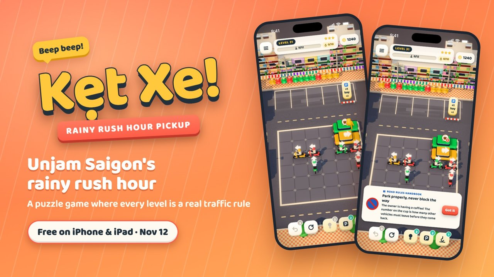
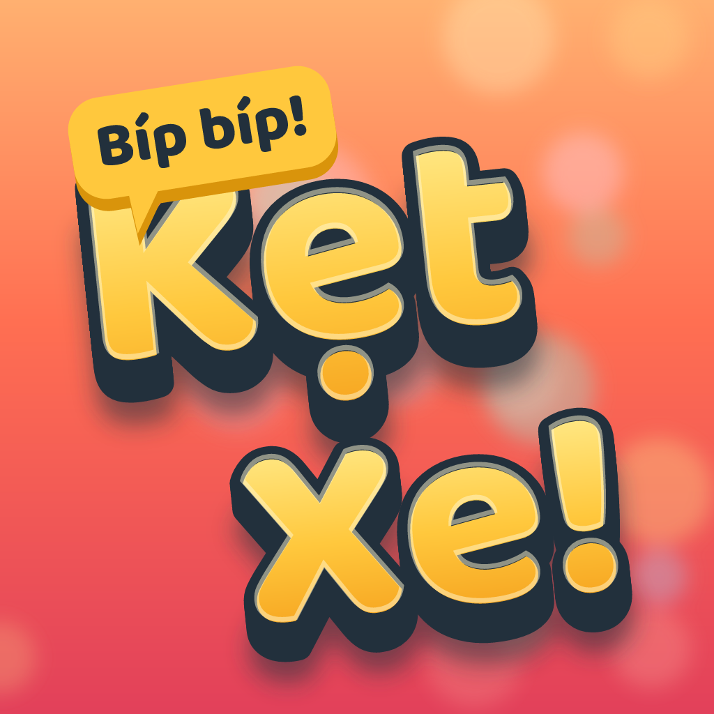

Kẹt Xe! Saigon Rush Hour
Press kit · Bộ tài liệu báo chí
Fact sheet
- Game
- Kẹt Xe! Saigon Rush Hour (Vietnamese title: Kẹt Xe!)
- Developer
- An Tran, a small independent developer in Vietnam
- Release date
- November 12, 2026
- Platforms
- iPhone and iPad, iOS 15 or later
- Price
- Free. No ads, no in-app purchases, no data collected.
- Languages
- English, Vietnamese
- Age rating
- 13+
- App Store
- apps.apple.com/app/id6824458339 (live on launch day)
- Website
- minhandsi1131.github.io/ketxe
- Press contact
- minhandsi1131@gmail.com
About the game
Kẹt Xe! Saigon Rush Hour is a puzzle game about Saigon's famous rainy-season rush hour. Tap vehicles out of a gridlocked junction to the pickup bays, where riders in coloured raincoats board the vehicle that matches their colour; full buses, taxis and motorbikes drive off and free the bay. Every new mechanic is a real Vietnamese traffic rule, from helmets and one-way streets to ambulances and railway crossings, told through short stories from a cast of eight neighbours.
Features
- 130 levels across 13 chapters, each proven solvable without a single honk.
- 15 real traffic rules, each with a Vietnamese road sign, a short story and a quick quiz, collected in a Road Rules Handbook. Players can sit a kids' licence test and share their certificate.
- Rain that floods the pickup bays, traffic lights, ambulances, one-way streets, school zones, railway crossings and designated drivers.
- My Street: rebuild eight Saigon neighbourhoods with the stars you earn.
- A daily puzzle with its own Game Center leaderboard, daily quests, weekly stamps, and seasonal Tết and Mid-Autumn events.
- All 3D models, sound effects and music are generated in code, including a soundtrack in the style of southern Vietnamese traditional music (đàn tranh, đàn bầu, bamboo flute).
- Colour symbols for colour-blind players; progress syncs through iCloud.
About the developer
Kẹt Xe! is made by An Tran, a small independent developer in Vietnam. The game is free, with no ads and no in-app purchases.
The images and videos on this page may be used freely in coverage of the game.
Thông tin nhanh
- Game
- Kẹt Xe! (tên tiếng Anh: Kẹt Xe! Saigon Rush Hour)
- Nhà phát triển
- An Tran, nhà phát triển độc lập nhỏ ở Việt Nam
- Ngày ra mắt
- 12/11/2026
- Nền tảng
- iPhone và iPad, iOS 15 trở lên
- Giá
- Miễn phí. Không quảng cáo, không mua trong app, không thu thập dữ liệu.
- Ngôn ngữ
- Tiếng Anh, tiếng Việt
- Độ tuổi
- 13+
- App Store
- apps.apple.com/app/id6824458339 (mở vào ngày ra mắt)
- Trang web
- minhandsi1131.github.io/ketxe
- Liên hệ báo chí
- minhandsi1131@gmail.com
Giới thiệu game
Kẹt Xe! là game giải đố về giờ tan tầm mùa mưa ở Sài Gòn. Người chơi chạm cho từng chiếc xe chạy ra khỏi ngã tư kẹt cứng, vào bến đón khách; khách mặc áo mưa màu nào lên xe màu đó, xe đầy thì chạy đi và nhường bến. Mỗi cơ chế mới là một luật giao thông thật của Việt Nam, từ đội mũ bảo hiểm, đường một chiều đến nhường xe cứu thương và dừng trước đường tàu, được kể qua những câu chuyện ngắn của tám người hàng xóm.
Điểm nổi bật
- 130 màn trong 13 chương, màn nào cũng được kiểm chứng là gỡ được mà không cần bấm còi.
- 15 luật giao thông thật, mỗi luật có biển báo Việt Nam, một câu chuyện và một câu đố nhanh, gom lại trong Sổ tay giao thông. Người chơi có thể thi bằng lái nhí và chia sẻ giấy chứng nhận.
- Mưa làm ngập bến đón, đèn giao thông, xe cứu thương, đường một chiều, khu trường học, đường tàu và tài xế hộ.
- Phố Nhà Mình: dùng sao kiếm được để sửa sang tám khu phố Sài Gòn.
- Thử thách ngày có bảng xếp hạng Game Center riêng, nhiệm vụ hằng ngày, tem tuần, cùng sự kiện Tết và Trung thu.
- Toàn bộ mô hình 3D, hiệu ứng âm thanh và nhạc đều được tạo bằng code, kể cả bản nhạc theo phong cách nhạc truyền thống Nam Bộ (đàn tranh, đàn bầu, sáo trúc).
- Có ký hiệu màu cho người khó phân biệt màu; tiến trình đồng bộ qua iCloud.
Về nhà phát triển
Kẹt Xe! do An Tran, một nhà phát triển độc lập nhỏ ở Việt Nam, làm ra. Game miễn phí, không quảng cáo và không mua trong app.
Hình ảnh và video trên trang này được dùng tự do khi viết bài về game.
Videos · Video
Logo, icon and key art · Logo, biểu tượng, ảnh chính


Logos are transparent PNGs. Click any image for the full size.